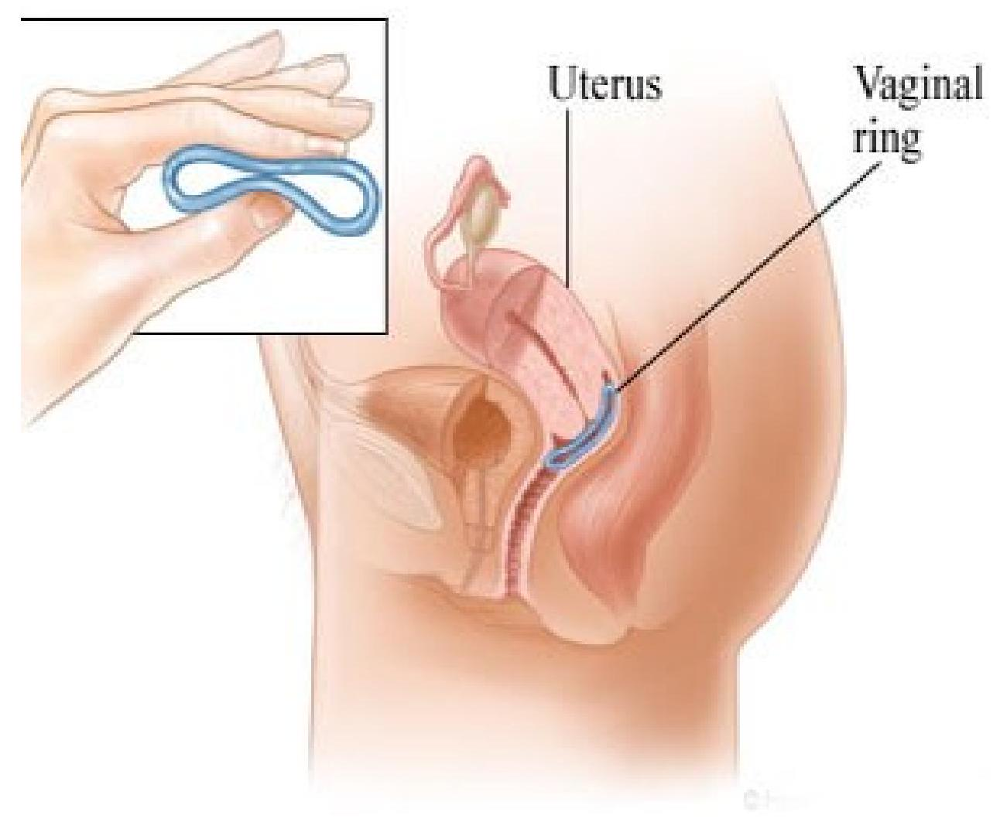

Progestin-Only & Other Hormonal Contraceptives
Progestin-Only Pills (POPs)
Progestin-only pills (POPs), also known as the "minipill," contain only one hormone, a progestin, in a low dose. They do not contain estrogen, which makes them a suitable option for women who cannot or should not take estrogen, particularly breastfeeding mothers.
Mechanism of Action
Thickening Cervical Mucus: This is the primary mechanism. POPs make the cervical mucus thicker and more viscous, creating a barrier that prevents sperm from entering the uterus.
Partial Suppression of Ovulation: Ovulation is suppressed in about 50% of cycles, but this effect is not consistent, unlike with COCs.
Endometrial Changes: They can lead to an atrophic endometrium, making implantation less likely.
Benefits and Limitations
| Advantages | Disadvantages/Limitations |
|---|---|
|
|
Usage: One pill is taken every day, at the same time, with no break between packs.
Progestin-Only Injectable Contraceptives (POICs)
Injectable contraceptives are administered as a deep intramuscular (or subcutaneous) injection that provides long-acting protection from pregnancy. The most common type is Depot-Medroxyprogesterone Acetate (DMPA).
Types Available in Kenya
- Depot-Medroxyprogesterone Acetate (DMPA, Depo-Provera®): 150 mg given every 3 months (13 weeks).
- Norethisterone Enanthate (NET-EN, Noristerat®): 200 mg given every 2 months.
Mechanism of Action
POICs primarily work by suppressing the hormones responsible for ovulation. They also thicken cervical mucus and cause thinning of the endometrium.
Benefits and Limitations
| Advantages | Disadvantages/Limitations |
|---|---|
|
|
Contraceptive Implants
Contraceptive implants are small, flexible rods containing progestin that are inserted just under the skin (subdermally) of a woman's upper arm. They release the hormone slowly to provide continuous, long-term protection.
Types of Implants
| Device Name | Design | Hormone | Duration of Effectiveness |
|---|---|---|---|
| Jadelle® | 2 rods | Levonorgestrel | 5 years |
| Sino-implant (ZARIN) | 2 rods | Levonorgestrel | 4 years (possibly 5) |
| Implanon® | 1 rod | Etonogestrel | 3 years |
Mechanism of Action
Implants work similarly to other progestin-only methods: thickening cervical mucus, suppressing ovulation, and thinning the endometrial lining.
Benefits and Limitations
| Advantages | Disadvantages/Limitations |
|---|---|
|
|
Client Instructions after Insertion/Removal: The client should be advised to keep the insertion area clean and dry for 4-5 days and to return to the clinic if there are signs of infection (pain, heat, pus, redness) or if a rod appears to be coming out.
Other Hormonal Methods: Patch and Ring
These methods deliver combined hormones (estrogen and progestin) without requiring a daily pill.
Contraceptive Skin Patch
The skin patch is an adhesive patch applied to the skin once a week for three weeks, followed by a patch-free week to allow for menstruation. It delivers hormones through the skin into the bloodstream. It works similarly to COCs by suppressing ovulation and thickening cervical mucus.
Contraceptive Vaginal Ring (NuvaRing)
This is a soft, flexible ring that a woman inserts into her vagina. It is left in place for three weeks and then removed for one week, during which menstruation occurs. The ring releases a continuous low dose of estrogen and progestin, which are absorbed through the vaginal wall. It works by suppressing ovulation.
